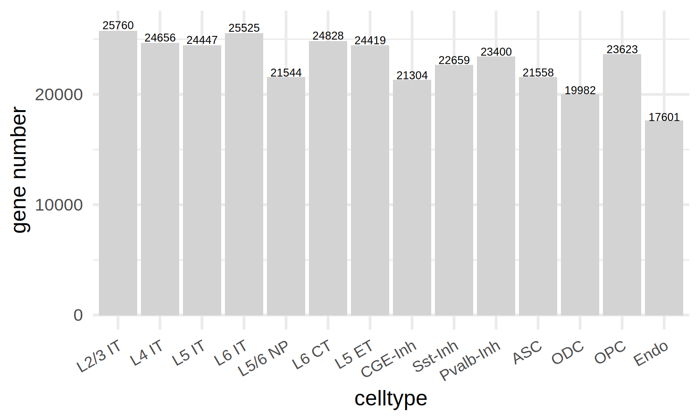
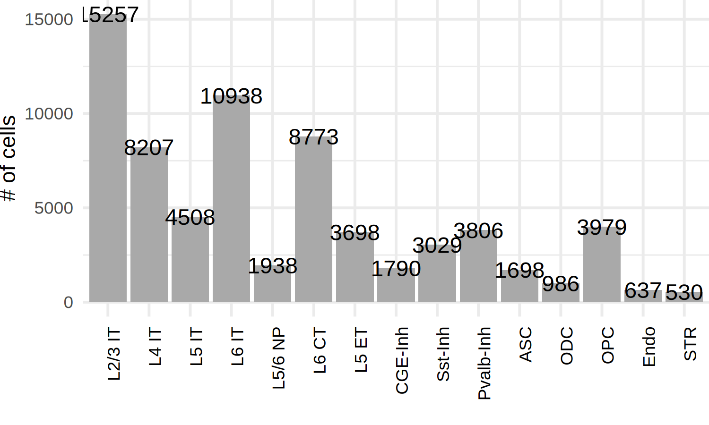
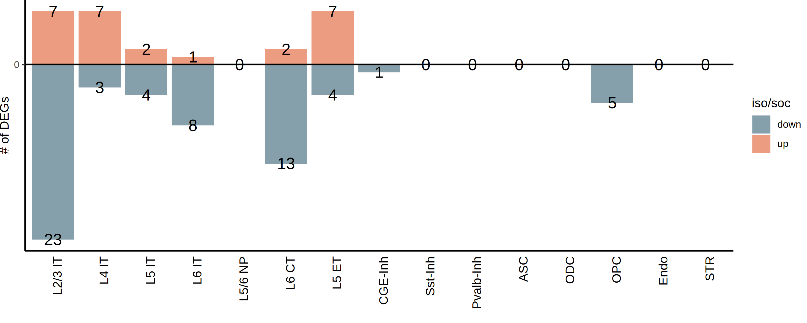

library(Seurat)
library(ggplot2)
library(dplyr)
library(patchwork)
library(stringr)
library(ggplot2)Perform DEG analysis
## https://drive.google.com/file/d/16Jq6w_KAWwI2rBN7SYBw-7bm5qwVoFyt/view?usp=drive_link
seu_obj <- readRDS(file="/project/zhuzhuzhang/lyang/scaleBio_RNA_rat_brain/out_mRatBN/merged_seurat_obj_celltype_annotated_2.rds")# pseudobulk the counts based on donor-condition-celltype
pseudo_seu <- AggregateExpression(seu_obj,
assays = "RNA",
return.seurat = T,
group.by = c("sample_name","celltype"),
normalization.method = NULL)
tail(Cells(pseudo_seu))Names of identity class contain underscores ('_'), replacing with dashes ('-')
This message is displayed once every 8 hours.- 'soc-M-3_Pvalb-Inh'
- 'soc-M-3_ASC'
- 'soc-M-3_ODC'
- 'soc-M-3_OPC'
- 'soc-M-3_Endo'
- 'soc-M-3_STR'
pseudo_seuAn object of class Seurat
26597 features across 175 samples within 1 assay
Active assay: RNA (26597 features, 0 variable features)
2 layers present: counts, datapseudo_seu$celltype.group <-
paste(pseudo_seu$celltype, str_split(pseudo_seu$sample_name,"-",simplify = T)[,1], sep = "_")head(pseudo_seu@meta.data)| orig.ident | sample_name | celltype | celltype.group | |
|---|---|---|---|---|
| <chr> | <chr> | <chr> | <chr> | |
| iso-F-1_L2/3 IT | iso-F-1_L2/3 IT | iso-F-1 | L2/3 IT | L2/3 IT_iso |
| iso-F-1_L4 IT | iso-F-1_L4 IT | iso-F-1 | L4 IT | L4 IT_iso |
| iso-F-1_L5 IT | iso-F-1_L5 IT | iso-F-1 | L5 IT | L5 IT_iso |
| iso-F-1_L6 IT | iso-F-1_L6 IT | iso-F-1 | L6 IT | L6 IT_iso |
| iso-F-1_L5/6 NP | iso-F-1_L5/6 NP | iso-F-1 | L5/6 NP | L5/6 NP_iso |
| iso-F-1_L6 CT | iso-F-1_L6 CT | iso-F-1 | L6 CT | L6 CT_iso |
saveRDS(pseudo_seu,file = "./pseudo_Seu_obj_2.rds")Idents(pseudo_seu) <- "celltype.group"pseudo_de <- list()## FindMarkers function is used to identify the differential epxression genes
bulk.L5IT.de.L5IT <- FindMarkers(object = pseudo_seu,
ident.1 = "L5 IT_iso",
ident.2 = "L5 IT_soc",
test.use = "DESeq2")head(bulk.L5IT.de.L5IT)| p_val | avg_log2FC | pct.1 | pct.2 | p_val_adj | |
|---|---|---|---|---|---|
| <dbl> | <dbl> | <dbl> | <dbl> | <dbl> | |
| Slit2 | 2.949433e-10 | 0.6359687 | 1 | 1 | 7.844608e-06 |
| Samd5 | 7.635090e-09 | -0.6475878 | 1 | 1 | 2.030705e-04 |
| LOC102548918 | 2.099395e-07 | -0.8479969 | 1 | 1 | 5.583761e-03 |
| Hecw2 | 2.247698e-07 | 0.3547454 | 1 | 1 | 5.978203e-03 |
| Npas2 | 3.742395e-07 | -0.3196543 | 1 | 1 | 9.953649e-03 |
| Thrb | 8.550333e-07 | -0.3182722 | 1 | 1 | 2.274132e-02 |
pseudo_de <- list()
for(i in unique(pseudo_seu$celltype)){
bulk.de <- FindMarkers(object = pseudo_seu,
ident.1 = paste0(i,"_iso"),
ident.2 = paste0(i,"_soc"),
test.use = "DESeq2")
pseudo_de[[i]] <- bulk.de
}names(pseudo_de)- 'L2/3 IT'
- 'L4 IT'
- 'L5 IT'
- 'L6 IT'
- 'L5/6 NP'
- 'L6 CT'
- 'L5 ET'
- 'CGE-Inh'
- 'Sst-Inh'
- 'Pvalb-Inh'
- 'ASC'
- 'ODC'
- 'OPC'
- 'Endo'
STR is missing from the DEG analysis, since it’s missing in some samples
sapply(pseudo_de,nrow)- L2/3 IT
- 25760
- L4 IT
- 24656
- L5 IT
- 24447
- L6 IT
- 25525
- L5/6 NP
- 21544
- L6 CT
- 24828
- L5 ET
- 24419
- CGE-Inh
- 21304
- Sst-Inh
- 22659
- Pvalb-Inh
- 23400
- ASC
- 21558
- ODC
- 19982
- OPC
- 23623
- Endo
- 17601
plot the gene numbers that are detected in each cell type
options(repr.plot.width = 5, repr.plot.height = 3, repr.plot.res = 300)
sapply(pseudo_de,nrow) %>%
as.data.frame() %>%
setNames("gene_num") %>%
mutate(celltype=row.names(.)) %>%
mutate(celltype=factor(celltype,levels=names(pseudo_de))) %>%
ggplot(aes(x=celltype,y=gene_num))+
geom_bar(stat = "identity",fill="lightgrey")+
geom_text(aes(label = gene_num),
position = position_stack(vjust = 1.02),size=2)+
theme_minimal()+
theme(axis.text.x = element_text(size=8,angle=30,hjust=1,vjust=1))+
labs(y="gene number")
saveRDS(pseudo_de,file = "./pseudo_DESeq2_DEG_2.rds")save DEGs into files
dir.create(path = "./FC0.3.DEG.list_2")Warning message in dir.create(path = "./FC0.3.DEG.list_2"):
“'./FC0.3.DEG.list_2' already exists”## save all gene list
filename=c('L23-IT','L4-IT','L5-IT','L6-IT','L56-NP','L6-CT','L5-ET','CGE-Inh','Sst-Inh','Pvalb-Inh','ASC','ODC','OPC','Endo')
lapply(seq_len(length(names(pseudo_de))),function(x){
pseudo_de[[x]] %>%
write.table(,file=paste0("./FC0.3.DEG.list_2/",filename[x],"_iso_vs_soc_total_gene.xls"),sep="\t",quote=F)
}
)filename=c('L23-IT','L4-IT','L5-IT','L6-IT','L56-NP','L6-CT','L5-ET','CGE-Inh','Sst-Inh','Pvalb-Inh','ASC','ODC','OPC','Endo')
lapply(seq_len(length(names(pseudo_de))), function(x) {
if (sum(pseudo_de[[x]]$p_val_adj < 0.05 & abs(pseudo_de[[x]]$avg_log2FC) > 0.3,na.rm = TRUE) > 0) {
filtered_data <- pseudo_de[[x]] %>%
filter(p_val_adj < 0.05, abs(avg_log2FC) > 0.3)
write.table(filtered_data,
file = paste0("./FC0.3.DEG.list_2/", filename[x], "_iso_vs_soc_DEG.xls"),
sep = "\t",
quote = FALSE,
row.names = TRUE)
}
})Plot DEG number and cell count
p1 <-
seu_obj@meta.data %>%
count(celltype) %>%
ggplot(aes(x=celltype,y=n))+
geom_bar(stat = "identity",fill="darkgrey")+
geom_text(aes(label = n), vjust = 0.5,size=4)+
labs(x="",y="# of cells")+
theme_minimal()+
theme(axis.text.x=element_text(angle=90,hjust=1,color='black'),
plot.margin = unit(c(0,0,0,0), "cm"))p1
p2 <-
do.call(rbind,Map(cbind, pseudo_de, new_clumn = names(pseudo_de))) %>%
mutate(diff=case_when(p_val_adj<0.05 & avg_log2FC>0.3 ~ "up",
p_val_adj<0.05 & avg_log2FC< (-0.3) ~ "down",
.default = "nonsig")
) %>%
count(new_clumn,diff) %>%
mutate(plot_y=ifelse(diff=="down",(-1)*n,n)) %>%
filter(new_clumn!="NA",diff!="nonsig") %>%
mutate(new_clumn=factor(new_clumn,levels=levels(seu_obj@meta.data$celltype))) %>%
ggplot(aes(x=new_clumn,y=plot_y,fill=diff))+
geom_bar(stat = "identity")+
geom_hline(yintercept = 0)+
labs(x="",y="# of DEGs",fill="iso/soc")+
geom_text(aes(label = abs(plot_y)), vjust = 0.5,size=5)+
scale_fill_manual(values=c("#85a0ab","#eb9c81"))+
scale_y_continuous(breaks=c(-300,-200,-100,0,100,200),labels=c(300,200,100,0,100,200))+
theme_classic()+
theme(panel.grid = element_blank(),
axis.text.x = element_text(angle=90,color='black',hjust=1,size=11),
#axis.text.x = element_blank(),
axis.ticks.x = element_blank(),
plot.margin = unit(c(0,0,0,0), "cm"))p2 <- do.call(rbind,Map(cbind, pseudo_de, new_clumn = names(pseudo_de))) %>%
mutate(diff=case_when(p_val_adj<0.05 & avg_log2FC>0.3 ~ "up",
p_val_adj<0.05 & avg_log2FC< (-0.3) ~ "down",
.default = "nonsig")
) %>%
count(new_clumn,diff) %>%
mutate(plot_y=ifelse(diff=="down",(-1)*n,n)) %>%
filter(new_clumn!="NA",diff!="nonsig") %>%
add_row(new_clumn=c("L5/6 NP","Sst-Inh","Pvalb-Inh","ASC","ODC","Endo","STR"),diff="up",n=0,plot_y=0) %>%
mutate(new_clumn=factor(new_clumn,levels=levels(seu_obj@meta.data$celltype))) %>%
ggplot(aes(x=new_clumn,y=plot_y,fill=diff))+
geom_bar(stat = "identity")+
geom_hline(yintercept = 0)+
labs(x="",y="# of DEGs",fill="iso/soc")+
geom_text(aes(label = abs(plot_y)), vjust = 0.5,size=5)+
scale_fill_manual(values=c("#85a0ab","#eb9c81"))+
scale_y_continuous(breaks=c(-300,-200,-100,0,100,200),labels=c(300,200,100,0,100,200))+
theme_classic()+
theme(panel.grid = element_blank(),
axis.text.x = element_text(angle=90,color='black',hjust=1,size=11),
#axis.text.x = element_blank(),
axis.ticks.x = element_blank(),
plot.margin = unit(c(0,0,0,0), "cm"))options(repr.plot.width = 10, repr.plot.height = 4, repr.plot.res = 300)
p2
pdf("./DEG_FC0.3_counts_barplot_2.pdf",width=10,height=6)
p2/p1 + plot_layout(heights = c(2, 1))+ plot_annotation(title='threshold: p.adjust<0.05 & |logFC|>0.3')
dev.off()
png: 2